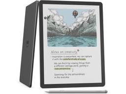
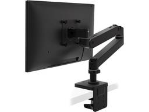
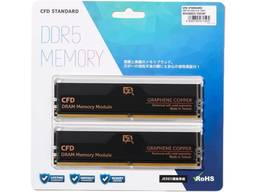
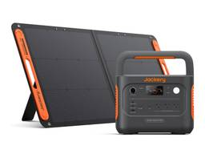
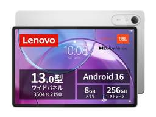
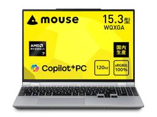
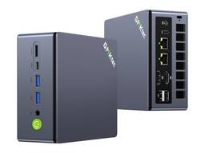
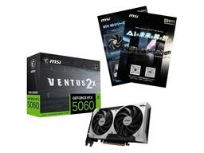
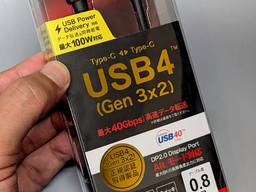
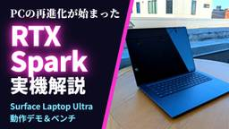

PC Watch
https://pc.watch.impress.co.jp
PC/テクノロジーの最新情報、レポート等でPC業界を先取り
フィード

コード系でOpus 5超え「DeepSeek-V4.1-Flash-1017」無償公開 61
61
PC Watch
前バージョンの登場からわずか37日、DeepSeekの“Flash”がまた強くなった。DeepSeekは10月17日(日本時間)、AIモデル「DeepSeek-V4.1-Flash-1017」を発表した。同日のうちに、オープンウェイト(モデルの重み)はMITライセンスのもとHugging Faceで無償公開され、商用利用も認められる。総パラメータ数552B(5,520億)ながら、コード修正ベンチマーク「DeepSWE v1.1」は77.0で、Anthropicの最上位級「Claude Opus 5」の74.0を上回る。
11時間前
【本日みつけたお買い得品】7千円オフ！Fire TV Stick 4K Maxが8,980円に
PC Watch
Amazonにてプライム感謝祭セールが開催中。ストリーミングデバイスのFire TVシリーズがセール対象となっており、プライム会員価格で購入できる。
19時間前

【本日みつけたお買い得品】「Kindle Scribe Colorsoft」が2万2千円引き！カラー表示対応
PC Watch
Amazonにてプライム感謝祭セールが開催中。電子書籍リーダのKindleシリーズがセール対象となっている。ノート機能を搭載し、カラー表示に対応する11型サイズの「Kindle Scribe Colorsoft(32GB)」は2万2,000円引きの8万4,980円で購入できる。
21時間前

【本日みつけたお買い得品】エルゴトロンのモニターアーム「LX Pro」が2,180円引き、プライム感謝祭
PC Watch
Amazonにてプライム感謝祭セールが開催中。エルゴトロンのモニターアームがセール対象となっている。「LX Pro モニターアーム」のブラックモデルは、2,180円引きの1万8,800円で購入できる。
21時間前

【本日みつけたお買い得品】2万円弱の割引！CFDのDDR5-5600 32GBメモリがプライム感謝祭で 1
PC Watch
Amazonにてプライム感謝祭セールが開催中。CFD販売の16GB 2枚セットのDDR5メモリ「W5U5600CS-16GC46F」が直近価格から1万9,850円引きの6万3,800円で購入できる。
1日前

【本日みつけたお買い得品】Jackeryのポータブル電源とソーラーパネルのセットが約6万9千円引き
PC Watch
Amazonにおいて、ポータブル電源がお買い得だ。Jackeryのポータブル電源とソーラーパネルのセット「Solar Generator 1000 New 100W」は、直近価格から6万9,417円引きで、8万5,183円にて購入できる。
1日前

【本日みつけたお買い得品】スナドラ搭載！ペン付属！レノボのAndroidタブレットが約1万6千円引き
PC Watch
Amazonにおいて、13型Androidタブレットのレノボ「Idea Tab Pro Gen 2」が10月5日の価格から1万6,399円引きで、7万2,800円にて購入可能だ。
1日前

【本日みつけたお買い得品】120Hz/2,560×1,600ドットのRyzen AI搭載ノートが約3万9千円オフ
PC Watch
Amazonは10月16日から19日にかけて、プライム感謝祭を実施中だ。15.3型ノートPCのマウスコンピューター「mouse B5-A7A01SR」は、プライム会員限定の3万9,704円引きで、22万7,880円にて購入できる。
1日前

【本日みつけたお買い得品】Ryzen PRO搭載ミニPCが約2万1千円オフ。32GBメモリに1TB SSD！
PC Watch
Amazonは10月16日から19日にかけて、プライム感謝祭を実施している。GMKtecのミニPC「M7 Ultra」は、プライム会員限定の2万1,489円引きで、9万9,749円にて購入可能だ。
1日前

【本日みつけたお買い得品】MSIのGeForce RTX 5060ビデオカードが約1万5千円引き
PC Watch
Amazonは10月16日から19日にかけて、プライム感謝祭を実施中だ。MSIのビデオカード「GeForce RTX 5060 8G VENTUS 2X OC V1」は、プライム会員限定の1万5,803円引きで、7万4,800円にて購入できる。
1日前

【今すぐ読みたい！人気記事】まるで成長していない。「USB4」になっても呼び名が混乱している件。Gen 2とか相変わらず分かりにくいまま - PC Watch 2
PC Watch
USBという規格が複雑怪奇であることは、PCやスマホに詳しいユーザーに限らず、いまや一般の人にも知れ渡りつつある。誰にでも使いやすいことを目指して策定され、頭文字に「ユニバーサル」の「U」を据える業界標準規格が、ややこしいものの代表格として認知されているのは、非常に残念なことと言えよう。
1日前
【今すぐ読みたい！人気記事】地味にスゴイ。「脚が階段にめり込んで興ざめ」を防ぐ3D技術 - PC Watch 1
PC Watch
PC Watch編集部の担当者から、ゲームグラフィックス技術において、「歩行アニメーション技術について解説してほしい」という打診があった。担当編集者は、このあたりの話題を取り扱った下記の動画を見て大きな関心を抱いたようだ。
1日前

長期記憶でOpus 5超えをうたう「Hy-Memory-30B-A3B」、無償公開 3
PC Watch
AIエージェントの記憶の質は、会話のどの部分を書き残すかで決まる。その判断に特化した小型AIモデルが「Hy-Memory-30B-A3B」だ。TencentのAI開発チームTencent Hunyuanが10月16日(日本時間)、オープンウェイト(モデルの重み)としてHugging Faceで公開した。会話から記憶を作成して保存する性能の平均スコアは、同社の計測でAnthropicの「Claude Opus 5」を上回った。ライセンスはApache 2.0で、商用利用・改変・再配布が無償で認められる。
2日前


「箱を開けたらAIエージェント」の時代に！PCを変えるNVIDIA RTX Sparkをライブで実機解説【10月16日(金)21時配信】
PC Watch
NVIDIAが投入した高性能SoC「RTX Spark N1X」を搭載したWindows機がついに発売されます。N1XはAI処理向けに設計された仕様で、高性能GPUを統合し、メモリは最大128GB搭載可能。同時にWindows 11もAI向けに大幅なアップデートを果たし、エージェントAIが一気に身近になりました。
2日前

Meta、最高性能うたう米オープンウェイト「Muse Spark Open」を公開 3
PC Watch
これまでで最も高性能な米国製オープンウェイトモデルをうたう「Muse Spark Open」のウェイト(モデルの重み)が10月15日に公開された。Metaが提供するAIモデルで、Apple Silicon向けの最適化を施しており、M5 Ultra搭載Mac Studioを2台使用して、デスクトップでの利用も実現したとする。
2日前

パスワードも流出、ソースネクスト会員情報約2,252万件 17
PC Watch
ソースネクストは10月15日、同社が管理する会員情報に対して第三者による不正アクセスが行なわれ、会員の個人情報が外部に流出したと発表した。流出した可能性がある件数は2,251万9,960件に上る。
2日前

メモリ8GBのPCを救えるか。Windows 11、応答性が最大20%向上 26
PC Watch
メモリ8GBのPCで、改善の効果はとりわけ大きいという。Microsoftは10月15日(現地時間)、Windows 11の性能改善の成果と新機能を公式ブログで発表した。一連の改善により、日常操作の応答性は同社の測定で最大20%向上したという。
2日前

74Bが24GBに！ローカルAI向けNemotron 3.5 Bolt登場
3
PC Watch
メモリ24GBに収まり、ローカルで動作するエージェントAI向けのモデルが登場した。NVIDIAは10月15日(米国時間)、オープンモデル「Nemotron」シリーズの新モデルとして、「Nemotron 3.5 Super VL」と「Nemotron 3.5 Bolt 74B-A9B 24GB」をオープンウェイト(モデルの重み)としてHugging Faceで公開した。より小型の「Nemotron 3.5 Bolt E4B 4GB」も10月23日に公開すると予告している。
2日前